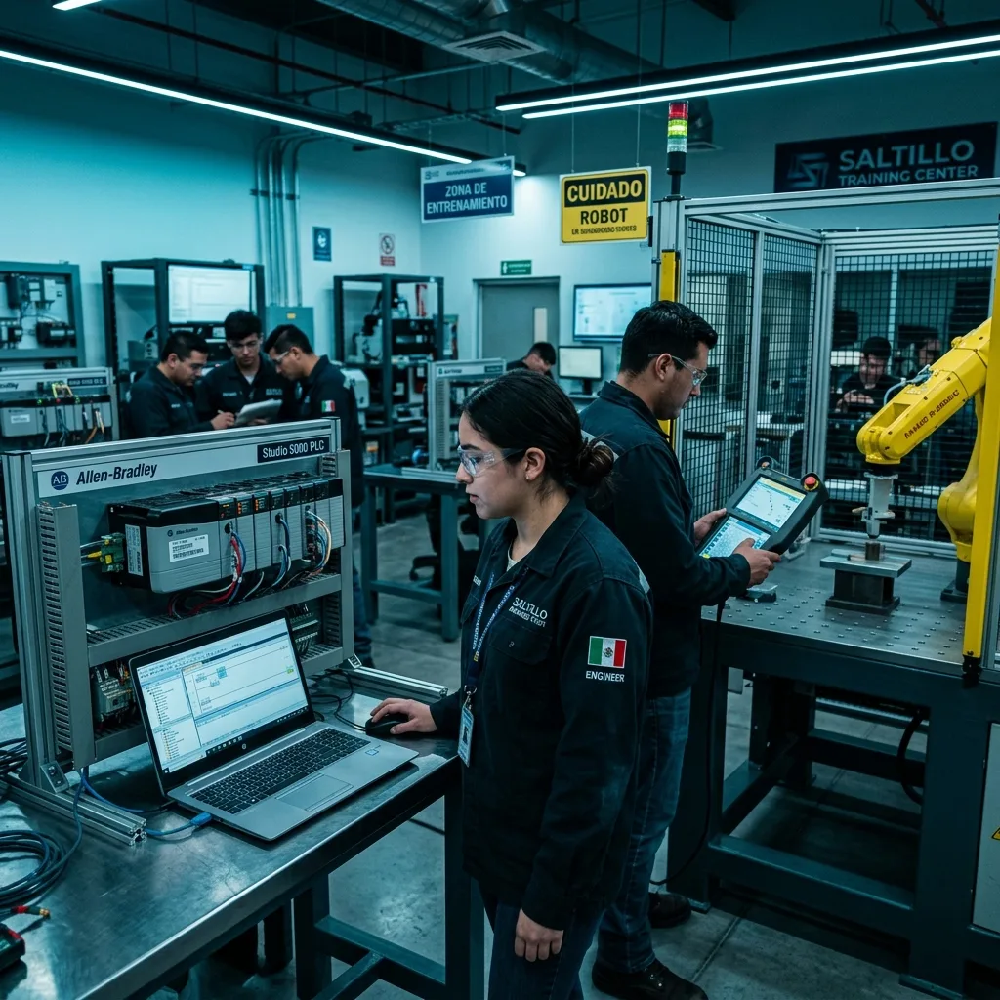

Cursos de PLC en Saltillo y Cursos de Robot: La Clave para Destacar en la Industria Automotriz

La Región Sureste de Coahuila (Saltillo, Ramos Arizpe, Derramadero) es uno de los motores industriales y automotrices más importantes de América del Norte. La creciente automatización y la electromovilidad exigen profesionales capacitados en el diagnóstico rápido y programación avanzada de Controladores Lógicos Programables (PLC) y Robots Industriales.
¿Qué deben incluir los mejores Cursos de PLC en Saltillo?
Para que una capacitación en PLC sea realmente efectiva para la industria de Saltillo, no basta con teoría en software simulado. El participante debe interactuar directamente con:
- Allen-Bradley Studio 5000 / Logix Designer: Programación de PLC CompactLogix y ControlLogix, estructuración en Ladder (LAD), rutinas AOI y redes EtherNet/IP.
- Siemens TIA Portal (S7-1200 / S7-1500): Configuración de hardware, bloques FB/FC/DB, programación en SCL/LAD y pantallas HMI WinCC.
- Diagnóstico de Paros de Línea: Metodología de rastreo de fallas eléctricas, sensores E/S y módulos de comunicación.
¿Qué se aprende en los Cursos de Robot en Saltillo?
Los cursos de robot en Saltillo están enfocados en la manipulación y puesta a punto de brazos robóticos FANUC, ABB y KUKA. Los puntos clave de entrenamiento incluyen:
- Manejo seguro del Teach Pendant y movimiento de ejes en coordenadas Joint, World y Tool.
- Calibración precisa de marcos de referencia (User Frame y Tool Frame / TCP).
- Programación de puntos de trayectoria, Pick & Place y rutinas de prevención de colisiones.
- Integración del robot con el PLC maestro mediante redes industriales (Profinet / EtherNet/IP).
⚡ Ventaja Robologix Automation
En Robologix Automation no solo somos un centro de capacitación: somos una empresa integradora de automatización industrial activa en Saltillo y Ramos Arizpe. Nuestros instructores están resolviendo problemas reales en planta diariamente, transmitiendo metodologías 100% aplicables al piso de producción.
Ver Oferta Completa de Cursos de PLC y Robot en Saltillo →Constancia STPS DC-3: Respaldo Curricular para tu Carrera
Al completar cualquiera de nuestros módulos de capacitación y aprobar las evaluaciones prácticas, se otorga la constancia de competencias laborales DC-3 (STPS), documento indispensable para ingenieros y técnicos que laboran o buscan ingresar a las grandes armadoras automotrices y proveedores Tier 1 de Coahuila.
¿Deseas consultar el próximo inicio de cursos en Saltillo?
Atendemos solicitudes individuales y planes grupales In-Company para empresas de Ramos Arizpe y Saltillo.
Contactar por WhatsApp (+52 844 455 1869)